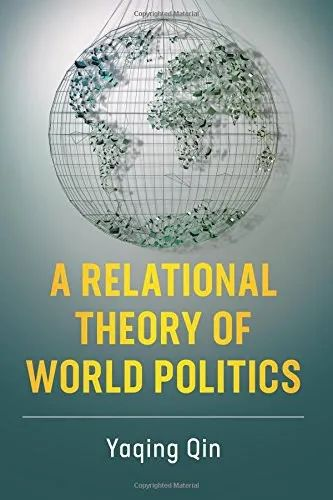
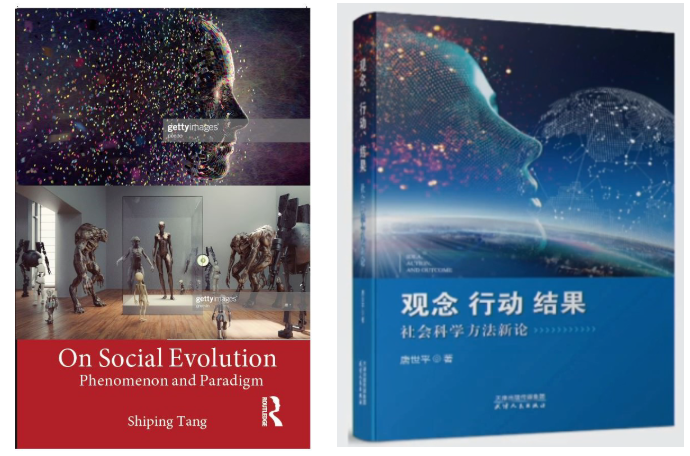

收录于合集 #名家访谈 6个

访者按
唐世平： 这是 秦亚青 老师在2012年12月访问复旦的时候，我（唐世平老师，以下同）对秦老师做的一个访谈。大家可能知道，我对一个学者为何会选择研究某个问题，以及如何研究，很感兴趣。而我对于秦老师从一个“positivist”到一个“constructivist”的转变有特别的兴趣。因此，这个专访的主要目的之一就是特别讨论秦老师从一个“positivist”到一个“constructivist”的转变。这也算是我对知识的社会学的业余兴趣的体现吧。
非常抱歉，这个采访一直拖到现在才弄好（8年了），且距离我发表《我所理解的秦亚青-1》（2014年10月）已经六年多了！实在是非常抱歉。再次感谢秦老师拨冗接受访谈，并且拨冗修改本文。当然，错误都是我的。
“国政学人·名家专访”第二期： 唐世平教授对话 秦亚青教授。
【本期嘉宾】
秦亚青 教授
秦亚青教授
受访人
秦亚青： 中国国际关系学家，曾任外交学院院长，同时担任外交部外交政策咨询委员会委员，中国国际关系学会副会长，比利时皇家学院外籍院士，东盟10+3东亚思想库网络中国国家协调员。秦亚青教授研究领域广泛，是第一位将国际关系领域的建构主义流派引入中国的学者。他的最新英文著作是A Relational Theory of World Politics（《世界政治的关系理论》）（Cambridge University Press，2018）。
采访人
唐世平： 复旦大学特聘教授、陈树渠讲席教授、教育部“长江学者”特聘教授。他的Social Evolution of International Politics (《国际政治的社会演化》）（牛津大学出版社，2013年）于2015年获得国际研究协会（ISA）的“年度最佳著作”奖。他是获得这一奖项的第一位中国学者和第一位亚洲学者。他的最新英文专著是On Social Evolution: Phenomenon and Paradigm（《论社会演化：现象与范式》）（Routledge, 2020）。他还是“掌中星球”新一代旅游商业平台的创始人兼CEO。
秦亚青：从“positivist”到“constructivist”
唐世平教授： 感谢秦老师给我这个机会。一开始，我会问几个比较正式一点的问题。我的第一个问题是，我觉得很多人，包括我可能都有这种印象，就是您是一个建构主义者。尽管我知道这个标签比较“俗”，但我想确认一下。
秦亚青教授： 我觉得我不是一个建构主义者。但是建构主义以什么样的标签去命名它？如果以美国“主流建构主义”这种标签命名，确实我不是。【采访者注：在当时，可能秦老师也觉得美国的“主流建构主义”的主要代表是Wendt。】
唐世平教授： 那么您觉得美国的主流建构主义，除了Wendt，您还比较欣赏谁？
秦亚青教授： 我想第一个就是Wendt，因为从他开始，他把它弄成了一个美国式的理论体系，所以他是一个很重要的人物。我对后来有些从规范视角去研究国际关系的人也是比较欣赏的，因为后来他们形成了比较完整的一个规范研究议程。我觉得像Finnermore在开创规范研究方面也是有功劳的，尽管当时她做得很简单。
还有一个人我确实很佩服，但始终有些东西看不懂，就是Friedrich Kratochwil（德国学者），我曾经一度想把他那本书翻过来，后来放弃了。从他做的学问来说，我是很佩服的。但是我和他的理念不完全一致，他主要是往法律上靠，整个规范体系近似一种法律体系。
后来，包括一些很年轻的美国学者，从各种不同视角来做规范的这些人，我感觉有些做得虽然不是很大，但是做得很认真。比如有一个学者给我的启发很大，叫McKen。他有一篇文章，我看了以后很欣赏，是在IO上发表的，这篇文章谈了规范退化。就是所有人都在拼命研究规范传播、规范发展、规范传播机制的时候，他开始考虑规范退化问题。【采访者注：你看，秦老师同样也欣赏不同视角的研究。】
唐世平教授： 在这里，我想插一句，在建构主义里，事实上我觉得有些人在某种意义上比Wendt还早，例如Adler，您对他的工作，或者说您对后来一些做规范的，比如Ian Clark（当然我认为他也更加靠法律），有什么看法？
秦亚青教授： 是这样，我觉得对某个学者的熟悉和了解的偶然性很强，对吧？很奇怪，我在美国最后考comprehensive test（博士综合考试）的时候，Wendt已经被列进去了，当时他只是有一些文章，书还没有出版。我当时最看不懂的就是他的东西，所以就留下了一个很深的印象。记得很清楚。我上学时有一个老师，那个老师是一个小天才，他是搞新马的，所以他就把建构主义这个东西弄过来了，他在读硕士研究生的时候就在IO上发文章了。但是他后来越来越向批判性马克思主义的方向发展，所以在主流就不占据什么位置了。他是巴西裔，记不清他叫什么了。
唐世平教授： 前面您讲的那个德国学者我大概知道，我老是拼不出他的名字，应该是Friedrich Kratochwil。这一批人中，有很多是来自德国，或者深受欧洲大陆的影响，比如Habermas，Giddens，还有Foucault。Foucault其实一直在所谓的美国主流IR中不太受重视，事实上在欧洲还是有一些影响的。
秦亚青教授： 我觉得包括Foucault，他们做的东西确实很令人深省。第二个偶然现象是，当时我们请来了一些外教，Alan Carlson（康奈尔大学）在外交学院做过两次外教，他是Wendt的学生，和他的讨论比较多，在这个过程中就有了一些认识，我感觉是有一些偶发现象在里面。还有一个人就是Onuf，我准备明年（2015年）把他请过来，他也基本上答应来了。这就和过去学语言有点关系。
唐世平教授： 美国主流建构主义非常强调观念的作用。那么我觉得您至少在这一点上，跟他们是有很多的重合的。但是，也正因为如此，我对美国主流建构主义，特别是Wendt所代表的“结构建构主义”有一个比较重要的怀疑。我认为Wendt最大的问题，或者是追随他的一部分人的最大的问题，就是他们是整体主义。我个人认为整体主义的理论都是有非常大的问题的，因为它直接走到了一个“集体主义”的极端。我认为，建构主义必须有一些微观的基础，这些微观的基础可能就是社会心理学或者是社会心理学和认知科学，因为它们提供了一个微观基础。换句话说，如果要讨论“观念（idea）”，必须要有微观的前提。比如Jervis就说，他是最早的“建构主义者”，因为他讨论了形象的建构等等。我想问一下，您对这个怎么看？
秦亚青教授： 在研究方法和具体的层次方法上，我从来也是主张多元化，我坚决反对任何事情搞一元。从结构上研究，就是从整体上的这种研究方式，我感觉到有问题。
确实，你刚才说的我非常同意。但是它（指“整体主义”）既有问题，也必然有它的好处。它的相对好处是为什么这些人能够占据这种大理论地位，就是因为他们很符合美国的科学主义精神。不管他们自己看没看，说没说，其实很大程度上都是受到语言结构的影响。但是反过来讲，微观也有很多很有意思的。像Legro他们做得都很好，他做“团体文化”，他的那篇文章我觉得很经典，我也让学生读了，就是二战时期使用潜水艇等武器之类的规范。就好比军队文化，他觉得可使用他就会使用，他如果觉得不可使用，在一般情况下是不会用的。那么这个就涉及到单元层次的一些具体微观层面。我是觉得都很有用处，关键在于任何一个人的研究显然有一个切入点，有些可能从这个点切入，有些从那个点切入。
唐世平教授： 您现在做的研究是偏宏观的吗？
秦亚青教授： 对，我的切入点是宏观角度。
唐世平教授： 有一本书您可能非常熟悉，就是Elias的《文明的进程》，我认为它是少数把微观和宏观的结合做得非常好的作品。Elias通过sociogenetic and psychogenetic搭建了一个非常好的桥梁，对宏观的社会变迁，以及微观的，包括人的行为、准则等，包括怎么内化的。我个人觉得，您或许将来某一天可能也会试图在宏观与微观之间架出一个桥梁来。您目前有什么思考或者打算吗？
秦亚青教授： 很实在地讲，我还没有做这方面的思考。今天在讲完以后，有两个学生提问，其中一个学生问的问题就涉及到近似操作化的问题，我也说我还没做很深入的思考。下一步我还没有想清楚是比较持续地在宏观层面做，还是也考虑做微观层面的。最近我有一个学生的博士论文刚刚完成，她完全是写情感方面，那就是微观层面，很多都是心理学的东西。我觉得她这个论文写得很好，写的时候我就对她说，你这个论文写好了是pioneering，写不好就是messy。确实，在微观层面上写，我自己感觉驾驭起来比宏观层面还要困难，因为涉及到方方面面的一些东西。所以我还没有想好。
唐世平教授： 刚才有一个问题其实已经涉及了，就是您为什么选择现在这条道路？换句话说，您为什么选择建构主义？因为您早期的很多工作并不是这个，为什么会做出这样的转变？
秦亚青教授： 我觉得我早期的工作是初入国关学界的时候，被一种“科学主义”（更确切地说是“positivism”）吸引。但从根本上，我确实不喜欢科学主义，这是真话。 我当时在美国为什么写那样一本书（秦老师的博士论文），就是觉得中国人没人写这个，然后（你们）美国人都在做这个，就是这样一种心态。所以当时我想，第一，我不想写中国，因为很多中国留学生都写中国；第二，我就想弄这些东西玩一玩。 【采访者注：这两点我和秦老师很像呀！知音，不需要理由！】
唐世平教授： 这一点我和您太像了。那么后来是为什么？
秦亚青教授： 我想有几个因素。我的父亲和母亲都是西医，但是他们深受儒家传统文化影响。我父亲会稍微画一点画，小时候父亲给我讲诗词，好比“独钓寒江雪”【采访者注：同样，我也认为柳宗元的“江雪”是唐诗中的最高杰作，没有之一】，他先大致画一个这样的风景，然后再去讲。从小他会让我看包括艺术、文学、音乐性的东西，带我去看电影，去旅游。但是在科学方面，我爸爸是外科大夫，他很不信中医，他认为有了病一定要看西医。然而他在家教方面，就完全成了另外一种状态。我从心里感觉，我对理念方面、道德修养、文学是比较倾向的，我一直很喜欢文学，我想建构主义和中国的一些理念是有点相通的。
唐世平教授： 我想问一下，这个时间点您能大致确定吗？比如说从哪一年到哪一年，您通过思考，然后觉得自己应该选择现在这个大致方向？
秦亚青教授： 如果要这样具体的话，应该是1999年，就是我开始翻译Wendt那本书的时候。当时在美国，Wendt的一些文章已经出来了，和主流的国关理论很不一样，在美国学界轰动不小。当我拿到他的手稿的时候，有些地方我很不明白，我就借一些其他的书来看。我翻东西一直是很快的，其他的书我在飞机上就可以翻出来一章，这本书是我花时间最长翻的书，确实费了很多工夫，那时我想起严复曾说，为造一个词要花超出半个月，我深有体会。因此，后来我就先放下了，半年集中看了一些书，显然受到了一点影响，不过和过去一沟通，觉得这个可能有点意思。
唐世平教授： 您提到了“科学实在论”，Wendt也声称自己是“科学实在论者”。因此，我的下一个问题，我想跟您探讨一位印度裔的英国学者，叫Roy Bhaskar。Bhaskar在Wendt的书里也是引用过的。我个人的浅见，Bhaskar是真正让社会科学，包括自然科学哲学走出Popper，以及他学生的阴影的一位具有转折性意义的学者。我猜您已经看过他的一些东西，我可以把他的一些介绍发给您看看，我觉得他的东西可能对您现在的一些研究会有一点帮助。我认为他是一种革命性的改变，从Descartes到Kant，到Popper这一类人，实际上都是基于一种个人主义对科学的理解，而且基本上是围绕科学到底发现什么的问题。我认为，Bhaskar其实就是告诉你，比如科学不是发现天鹅是白的还是黑的，科学是试图发现为什么天鹅是白的或是黑的，是去理解背后的机制。或者说，牛顿不是试图理解苹果已经掉下来，而是理解背后的东西。因此，有的时候我们对科学或者因果机制的理解可能要花很长的时间。举个例子，我们很早就知道肉放上一阵子会发臭，那么这个机制是什么呢？氧化。事实上花了我们很长的时间才理解这个根本机制，而这样的机制只能通过科学才得以解释。我觉得从这一层面来说，Bhaskar突破了Lakatos、Popper等。我觉得这样的理解可能对您以后的研究有一些帮助。我开始说了，在您面前，我是以一个非常尊重您的晚辈跟您提问，但我也会发起一点“挑战”，请您理解。
秦亚青教授： 我觉得我的理解和你刚才说的不是完全一样。第一个，我感觉科学就是要问天鹅为什么是白的，为什么是黑的。【采访者注：我也认为这没问题！】但首先他要知道天鹅是有黑的。实证科学，首先就要认定这个事实。比如说两个铁球同时落地，只有认定了两个铁球同时落地，才会问第二个问题，为什么同时落地？
唐世平教授： 我稍微修正一下，可能我刚才的表述有点过于简单化了。Bhaskar认为，世界应该被划分成三个领域，第一个是经验领域（Domain of Empirical）；第二个是事实领域（Domain of Actual），比如1840鸦片战争，我们都没经历过，但是我们都知道它发生过（历史学家告诉我们）；第三个是真实领域（Domain of Real），真实领域包含事实领域。但是真实领域，就是说非科学做不好，其实是这个意思，我不是说科学只追求这个， 但是肯定要确立一个社会事实或者一个自然事实 ，然后才去探讨背后的东西。
秦亚青教授： 对！黑天鹅是黑的，以及黑天鹅为什么是黑的，这是两个问题。另外，我想如果从科学哲学这个角度，Kuhn（库恩）是建构主义，因为如果按照理性主义，刚才你说的是非常对的，经过一系列人，比如康德，包括后来的波普尔，到Lakatos（拉卡托斯），他们这些人认为，真的就是真的，是可以通过经验来证明的，是可以通过理性来推导的，这是他们的一些基本观点。库恩很有意思，他给我的启发是很大的。他认为人信就是真的，scientific community信了这个科学理论，它就是理论，并且按照这个理论，可以做出很多成果来。一旦有一天大家不信了，它就不是了。这实际上是一种社会事实建构，这和Searle、和Berger、Luckmann很相似。
唐世平教授： 这个其实Bhaskar都讨论过。不过，我们不需要花太多时间在这上面，我就想提一下，Bhaskar其实驱动了两个relativism，您说的这个是一种叫认知论上的相对主义，如果我们假定真实就是真实，real is real。而如果一个理论发展出来了，它作为一个观念或者观念体系就是“real”的，但这并不代表这个理论是 true或者valid的，这是两码事。
秦亚青教授： 但是如果我们再往前推一步，走到比较更往后结构后现代的话，可能就没有什么actual，甚至也没有什么real，这就超越了它这个东西。当然这个东西到底是不是一种发展趋向，还很难讲。
刚才你说到建构主义，建构主义其实走到极端建构主义，它就是什么都没有，通过某种东西可以建构起一种你原来觉得根本不可思议的东西。我有两个经历，一个是亲身经历，一个是看书来的经历。1966的时候，可能当时你们年龄还比较小，那时我小学毕业。从1966年到1976年，是记忆很深刻的十年，我亲身经历过这些事情，一个非常虚无缥缈的idea出现了，所有人都信这是真的。
我在美国时看的一本书，给我的印象很深，就是The Spiral of Silence《沉默的螺旋》，很薄的一本小册子。当时老师让我们看这本书，书的内容很简单，就是做实验来论证一个问题。好比说屋里有五六个人，他指定其中两个人说你们说什么，其他几个都是不知情的人，这两个人就说现在外面的灯是红的，其他人说灯是绿的，有点像我们说的“指鹿为马”。这两个人越是非常肯定地这样说，那几个人就越来越不说话，他们明明看到的是绿灯，却不表达了。这个实验实际上是为了给竞选做战略策划。竞选就是即使你感觉到自己这一派弱，但声音也不能小，否则的话就是spiral of silence，会越来越没声音。
第二堂课，老师问你们觉得这个idea从哪里来，大家都说不知道，他就给了我们一篇文章。原来这位德国女学者博士毕业以后，就在戈培尔宣传部的一个部门工作，所以对于谎言重复一千遍就是真理这个道理是非常之明白的。因此，换句话说，如果我们想Kuhn的科学，如果不是一个科学scientific community，而是一个social community，假设一个东西出现，人们都信了，那么在这个社会范围内，至少在这一段时间内，它就真是“真”的了，大家就这样做了。对于你刚才问的问题，为什么会转向建构主义，是因为话语、观念这些东西一下子蹦出来以后，它的力量是非常强大的。
秦亚青教授
唐世平教授： 但real和true是两码事。
秦亚青教授： 是这样，我觉得我们掉入了一个漩涡，非要在 real、true和empirical这三个层次上来看问题。我们如果跳脱这个框架，那可能就是另外一回事。还有一个就是，科学主义和自然主义不一样。
唐世平教授： 我认为在社会科学里面，Bhaskar说的critical naturalism就是比较批判的。
秦亚青教授： 关于他的自然主义，我的理解是，既要尽量研究因果机制，这是很重要的一个方面，也要尽量向比较客观、严格的方面，向自然科学方面去靠近。
唐世平教授： 我之所以跟您探讨他，是因为我觉得您看了他的书以后，可能会有一些思考。我知道您特别忙，如果您有时间读读他的书，特别是他的头三部书，后面的那几部我承认非常难懂。他是我目前可能相对比较同意的社会科学哲学家，尽管他的有些东西我也不是很赞同。关于他的哲学立场，他说的critical naturalism，不是要让社会科学向自然科学靠近，而是说某些方法上可以。社会科学具有所谓的批判功能，就是只要任何一个观念一旦出现，这个就是一个社会事实，人们就可以去挑战，还可以去试图推导，或者试图理解这个idea是怎么来的，比如说受什么意识形态、生活背景影响等等，都可以去研究它，批判它。正是因为这样，实际上你会发现很容易就和Popper、Foucault联系在一起。而且Bhaskar是强烈地反对把社会科学变成自然科学。
秦亚青教授： 你刚才提到critical naturalism。科学主义在我的印象里只有一个最极端的标志——科学称神，就是认为什么东西是科学的，它就是对的。
唐世平教授： 您说的这些都没有问题，我跟您的立场完全一样，我们不再在哲学问题上花太多时间争论下去。所以，接下来我想问，关于您自己的研究，您的目标是什么？例如以中国为支点的一种带有建构主义色彩的非常强调观念的IR理论，这个理论其实您今天在讲座中也提到了，您希望这个理论能够适用的范围是？只是在东亚，只是在中国，还是说可能是全球？您认为社会科学不会有所谓的普世理论，而我认为是有的，不过很少。那么您现在心里的目标是什么？
秦亚青教授： 说实话，没有目标，我还没有想到。第一个，对将来最终发展到一个什么状态，确实没有目标。而且之所以我后来把重点放在过程上，确实是受了Whitehead（怀海特）的一些影响，当然也受了孔夫子的一些影响。另外就是我在这个过程中，发现很多时候都是偶然的，并且将来的目标是什么，很难讲，确实很难讲，再过几年，如果身体不好，到此为止，如果身体还好，说不定又会转向什么地方。第二个，关于application这个问题，没想过。因为我现在确实没有精力再去考虑怎么去操作化、应用等等的问题。关于应用的范围到底是在中国，在东亚，在世界，我也从来没想过，那是别人去考虑的，我觉得我没有精力去考虑这个，我只是对这个东西有兴趣，到目前为止，我仍然完全是在好奇心的驱动下去做事的。至于说我有没有什么目标，我就是觉得这个东西挺有意思，就做下去了。因为我现在功利心已经没有了，也没有什么必要了，所以我真没有什么设定。你刚才说的以中国为支点，其实我之前有说过一句话，我觉得还是能够比较代表我现在的心理状态，就是理论化方式是西方的，但是审美情趣是中国的，就是这样的一个基本内涵。
唐世平教授： 那这样别人会不会又说您是回到了“中学为体，西学为用”?
秦亚青教授： 我觉得没有“中学为体”，因为我觉得现在这个世界已经不可能是任何一个学为体的问题。我那年在国关学会论坛上的讲话，题目就是“全球为体，世界为用”。我觉得理论中肯定是有中国的因素和中国的一些审美情趣在里面。但它不可能完全和赵汀阳一样，就是中国是“体”。那么我觉得我不是。
唐世平教授： 我认为赵汀阳的东西，事实上就是说任何一个大的稳定的帝国都会创造一个思想体系。我现在做的一些研究就是用很多考古学的东西，基本上会有一样的话语体系，甚至连有些用词都一样，比如“四界（方）”（four realms）等等。对您具体的学术生涯我不能问得太细了，我就问到这里。
秦亚青教授： 没有关系，我是从40岁以后才开始做，所以没有很大的野心。
唐世平教授： 我现在要问的可能我在会上也会讨论，但是我想把我的一些困惑先说说给您听，希望听听您的理解和指教，然后我在发言的时候也会有所完善。
我觉得您是在这批发展中国学派中最清醒的人。就我个人而言，这个清醒我想有两点，首先您清楚地知道发展所谓的中国IR学派，这个理论，它不是中国的外交政策，它也许在一定程度上可以支持、指导、借鉴中国的外交政策，但是这个理论的目标不是那个东西。但是我的困惑和担忧是，现在很多人是这样，一说中国学派，中国话语体系，就是指中国该把自己的模式或者说该把外交什么的东西贴上一些标签（或者所谓的“理论”）。这是我的担心。我想问问您有没有这种担心？如果没有就算了，如果有，您是不是可以在某些场合或在某些地方告诫大家，这两者不是一回事。因为只有您这个地位的人我认为才可以做，比如说即便我这么认为，我也不好意思说。那么您怎么看？
秦亚青教授： 我觉得确实很多人没有把这个问题弄清楚，有些人是原本就不清楚，有些人是不想弄清楚，但也可能心里明白。我在文章中和很多发言中都提到过，这完全不是一回事。 可能像你说的，双方都可能有支撑的地方，这没有问题。但这两者的目的和动机不一样，所以应该是两种不同的知识体系。好比说十六大报告提出初级阶段社会主义理论，这个理论要指导中国很长一段时间怎么去做，这是指导行动的，是战略性理论，是非常有必要的。但它毕竟和学理性理论是两码事。
另外，我从来不想告诫任何人，因为我觉得人们是不听告诫的，大家都有自己的想法，都按自己想法去做。
唐世平教授： 应当说，像是您这个年纪还在追求学问，还在做一些真正的工作的人已经非常少了。我不是说您这一代人都没有了，而是说跟您同代的，甚至晚一代的，他们跟在您后面摇旗呐喊，但是他们其实是不做的，就只是中国学派地喊。我认为您，包括您的几个学生，是少数不仅仅停留在呐喊上，而是切实地在做事的。我的意思是，对于和您同代这批不切实做事的人，您不可能去改变他们。但是对于我这一代或者比我再晚一代的人，您有什么建议？因为这一批人中，有些人当然明白秦老师要做的东西不是什么喊口号，不是什么中国外交政策，然而也有一些人确实不明白，认为这两者就是一回事。您有什么建议吗？
秦亚青教授： 在讨论这些问题的场合，我肯定会说自己的观点。比如李少军当时在社科院组织了个研讨会，我就说我已经在我的文章里区分过这两种不同理论了，我现在重点是做第一类的理论，就是知识性理论。因为他出的题目是要说为什么，我说只有一个，那就是觉得好奇，有兴趣，没有其他的驱动因素。而我现在每年也要写很多的政策报告，这个确实就是任务，必须要完成。但这两者完全不是一回事。
我觉得做一些东西很有意思，至于做出来以后，我没有刚才你说的那种野心，比如设定我将来成为一个什么样的学派，这些我确实没有。我的兴趣到哪里，我就做到哪里，我觉得这个东西需要挖掘，我就去看书，就去做一些思考。我觉得可以形成一个还拿得出来的东西，我就去写，而不是应景的文章，在这方面我写的文章，我自己认为不管实际水平到哪一步，不是我应景写的，我应景写的也有很多，不过那是另外一回事情。
唐世平教授： 所以我觉得您和很多呐喊的人是不一样的，我是发自内心地尊重您。不过现在很多人都是跟着秦老师喊喊口号，拿点钱，做点事，并不是真去做发展理论。对于跟您一辈的人，您是不可能改变的。而对于比您晚一辈（跟我年纪差不多），甚至比我再小一辈的，您有什么期望或告诫？
秦亚青教授： 我对自己的博士生在这方面要求是比较严的，至少在博士阶段，在跟着我做论文的阶段，不能去搞那些，就是不能够。他们毕业以后，找了工作，再怎么搞，我管不着。但是现在必须先把这个底子打好，如果将来在这条轨道上走的话，就铺了一条非常基础的道路。这些年，我自己感觉有几个学生还是挺认真的，有些学生可能毕业以后就完全追求另外一种东西了，那么我也不会反对，因为人总是会选择不同的道路。而对于学生以外的人，我更多想的是，我自己做，你们看着好就追随。你们看着不好就算了。我不想用教训式的或者告诫性的话语，我就是拼死拼活自己做一点吧。所以我经常说，我是属于那种孤独的探索者。在这方面，我其实很少和别人分享，和别人说，他不一定有兴趣听，也可能完全不知道你在说什么。而我认为，认同确实很重要，人很重要的一点就是，在什么场合，你要知道什么是认同。比如开政策咨询会，一点理论的东西都不能提，就是要非常直白地把观点说出来。但是你心里想，它是有一种信念的，好比你在这里提的建议，尽管这些话都很直白，它背后肯定是有一种你的价值在里面保存着，这就行了。我平时跟学生说，你跟着我开东亚什么会，咨询会等，千万不要去说这个理论那个理论，没人听，直白地表述就是了。
另外，世平，我自己感觉，让很多人去做这种第一类型的学问，其实是不现实的。
唐世平教授： 我同意，而且我认为只有非常少数的人能够做好。
秦亚青教授： 我也深感现在这些年轻学者压力确实很大，要做项目，要评职称，要出东西。我觉得我很幸运，我评教授很早，评完教授以后，这些东西就抛到一边了，我可以写很多其他东西。而有些慢的东西，反正有很多时间可以想，等真正想好了，有个假期，就可以写出一些东西。我也不强求别人都要这样做，因为这样做很辛苦，又不赚钱。
唐世平教授： 确实。我接下来的问题可能比较尖锐一点。Levin他们很早就提出了族群中心主义。而你和我显然地非常同意，不管文化也好，文明也罢，或者是“社会化”，都会影响我们看待世界的角度，那么这个角度的一部分，可以粗略地把它归到族群中心主义。但是现在有很多人就是用中国中心主义替代西方中心主义，那么最后还是一个中心主义。我有两个相关的问题，第一个问题，如果用一个中心主义替代另外一个中心主义，您觉得这样的前景有什么危险，或者有什么价值？
秦亚青教授： 我认为危险大于价值。当然在过程之中，它有一个好处，当另外一种中心主义的“观念”来的时候，可能对原来的中心主义会有一个冲击，这样至少形成了一个对话、辩论的状态，这是好的地方。但是如果说第二个取代了第一个，那就非常危险了。希特勒是典型。为什么Katzenstein（卡赞斯坦）会有如此强烈的这种观点，我猜测，显然他们在希特勒时代有着非常深刻的教训。纳粹主义最后形成了话语垄断，形成了观念垄断，搞这种纯种的东西，但最后就是人身伤害，以及迫害，一系列的东西全都来了。
唐世平教授： 包括Foucault和 Arendt，他们在批判文化这方面批判得非常厉害。Foucault在society must be defended这本书里面，剖析和批评的就是要纯洁化社会这种思想。
秦亚青教授： 并且这个东西欺骗性很强。就好比说，任何理论都是中心主义的，任何文化都是中心主义的。我想现在如果从大趋势看，从思潮发展，后现代，将来应该在很多方面表现得会越来越明显，其中有一个很大的方面就是不能让一种声音独霸，要注重多样，注重多元等等。尽管在这个过程中非常难，大家都会认为自己的文化是好的，所以Katzenstein提的观点我很欣赏，就是美国人不要认为自己的文化是最强的，中国人也不能这样认为，否则将来就会出现一个很大的麻烦。如果这两种东西或者多种文化总是在那儿对话、竞争、合作、发展，那会很好。现在欧洲本身的社会多元化就是很好的，但将来世界会不会这样？我想如果有价值判断在里面，我希望出现这样一个世界，有着不同的声音。人们反对一些话语霸权不也是由于这个因素吗？只能有一种声音。但至于说将来会不会出现，我还是一个乐观主义者，大概率是不会。但是短暂的是会的，是很危险的，到时候就不仅仅是思想观念，甚至身体都会受到各种各样的伤害。
唐世平教授： 我跟您一样，在很多地方，我很欣赏Foucault，他那种非常具有穿透力的批判是很厉害的。
秦亚青教授： 我让我的学生们看书，当时有个学生说福柯就是光批判，我说批判就不得了，他不光有批判精神，而且很多还是非常有意思的事实，为什么麻风病人减少了，精神病人就多了？
唐世平教授： 我的下一个问题相对操作化一点。我们承认，在自己的成长过程中，接触到的自己的文化和别人的文化，肯定影响着看待问题的角度，有时候完全是潜意识的。我相信您并不完全仅仅是基于中国的某些影响或者归纳。但是我觉得现在很多人是这样。我周五的时候会讲，我其实是想讲两个问题，中国既是一个支点，又是一个数据点。关于支点，我认为我跟您完全一样，中国肯定是我的一个支点，但它仅仅是支点之一。
秦亚青教授： 对。
唐世平教授： 我觉得我跟您还一样的是，我认为中国只是我的兴趣点之一。比如说我现在做的一些东西，我也用古代中国，甚至用考古的很多东西，当然我提出的是一个相对比较体系演进的东西，我不太用结构这个词，因为我认为结构主义其实是很不好的。我的问题是，很多人仅仅停留在用中国的经验去归纳，换句话说，为什么经验事实，很多人做不到把它拓展到非中国，非欧洲，非美国？而可以是拉丁美洲，可以是非洲，可以是南亚，或者是中亚，这样的局限带来的危险会是什么，您有什么看法？
秦亚青教授： 从第一个层面来说，如果仅仅这样，它带来的一个后果可能就回到刚才的那个问题上了，完全是我这个话语要占主导的。但是从实际层面来讲，在这个文化生长起来的人，很难有其他文化中切身经历的东西。我觉得美国人有一个好的地方，就是把不同的人带在一块儿。就像你刚才谈到的，肯定要更大的场。好比Katzenstein的这套书，他是做欧洲、美国、中国、亚洲，还有非洲，他是想把这些不同的经验都比较起来。但是有一点，他做哪个州，他希望是由这个州本土的人来写，因为他觉得自己很难写出来，他没有在当地生活的经历。阿查亚和布赞的项目原先是想把亚洲、非洲甚至拉美都考虑在内，但实际操作起来是有困难的，最后还是先集中在东亚。 无论怎样，首先还是要有来自不同地方的人，有不同的经历，各方面的素养比较好，从个人的经验来写，然后再汇集。目的就是一点，不能一种话语主导，一种话语主导是很可怕的，这是我的切身经历。
唐世平教授： 可惜很多青年学者并不理解。我是有，因为我父亲在我生下来两个月就被抓到监狱里了。
秦亚青教授： 是，后来他们可能没有这种经历。此外，有些人认为，中国为什么要发展，就是要推翻美国。这种观点是不切实际的。美国这些年已经证明了，即便实力再强，也不可能什么事都压得住，将来国际社会会越来越民主。
唐世平教授： 最后一个问题，当然是我自己想问的，也是代表我们青年学者问的。不管我们发不发展中国学派，您能对我们提出三到五点忠告吗？
秦亚青教授： 哪方面的忠告？
唐世平教授： 任何方面。做人方面，您这个人是正直的，平和的，谦虚的。在做学问的过程中，这么长时间地辛勤耕耘，以您的个人经历来说，您愿意送给我们几句什么话？
秦亚青教授： 送话谈不上。第一个，真正自己想做的学问应该产生于自己的兴趣和好奇心，而不是任何其他的需求，它是一种情感供给，不是一种功利性的东西。我现在对我们现在的科研体系确实有很多质疑，凡是以功利心去做，大量地投入，最后出来的东西有什么意义？第二个，如果真想做一个学问，不管将来做什么样的，好比说我想做理论，我会在这个方面坚持做下去，我很多的思考会集中在这个上面，即便是这一年没有写这方面的东西，但是我在想，不中断，我觉得一断就麻烦了。第三个，做学问的过程中一定要交流，和不同文化背景的人交流，和不同年龄的人交流，和不同身份的人交流，有时候甚至和完全不懂的人交流，也能得到很多启发。
唐世平教授： 是的，一个完全跟我们不同领域的人，或许能从他的身上学到非常多的东西。
秦亚青教授： 你把这些东西简单地给他说一说，他给你提出很多批评，有时候很直白，但我觉得这个确实挺好。最后一个，我这个人，如果说有一个优点，就是从来都愿意做有挑战性的事情，我不愿意做那些一遍一遍重复的事情。包括我给学生上课，如果我三年还在重复一种上课模式，我自己就会觉得很无聊，觉得对不起学生，我不管改好改坏，三年是一定要改的，就是整个大的结构改，不是随便改一点。我认为挑战才有意思，可是很多人都不愿意挑战。
唐世平教授： 所以您是一位非常优秀的学者。只有这样的人，才能够成为一名优秀的学者！好的，我的问题都问完了。谢谢您，我们谈了有一个小时。
编辑 毛雅欣
美编 臧泽华
感谢唐世平教授的专访稿
感谢秦亚青教授、唐世平教授对国政学人的支持！
感谢田悦对采访录音的整理
封面图源：外交学院文中部分图源：外交政策委员会
特别推荐
1. 秦亚青教授最新英文著作
Qin, Y. (2018). A Relational Theory of World Politics. Cambridge: Cambridge University Press. doi:10.1017/9781316869505 ****

2. 唐世平教授最新中英文著作
-
On Social Evolution：Phenomenon and Paradigm, Shiping Tang Routledge/Taylor & Francis, 2020.03
-
《观念、行动、结果——社会科学的客体与任务》，唐世平 著，天津人民出版社，2020.12

3. “掌中星球”旅游商业平台
（点击进入吃货天堂👆
体验懂你的推荐算法！） 4. 延伸阅读 国政学人名家专访第一期
对话唐世平教授：关怀是终极动力

好好学习，天天“在看”